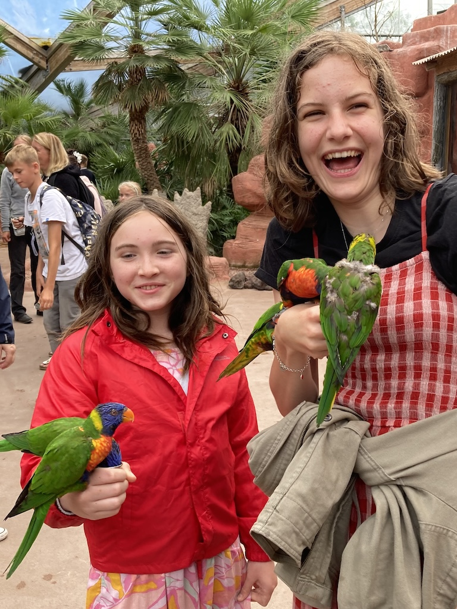
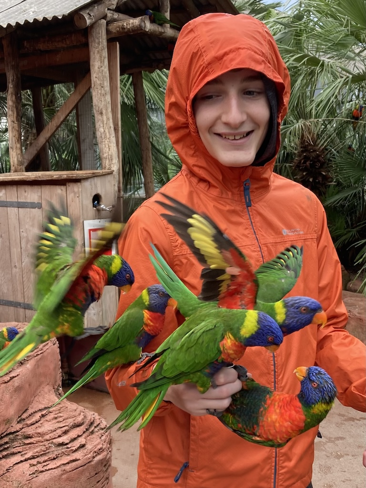
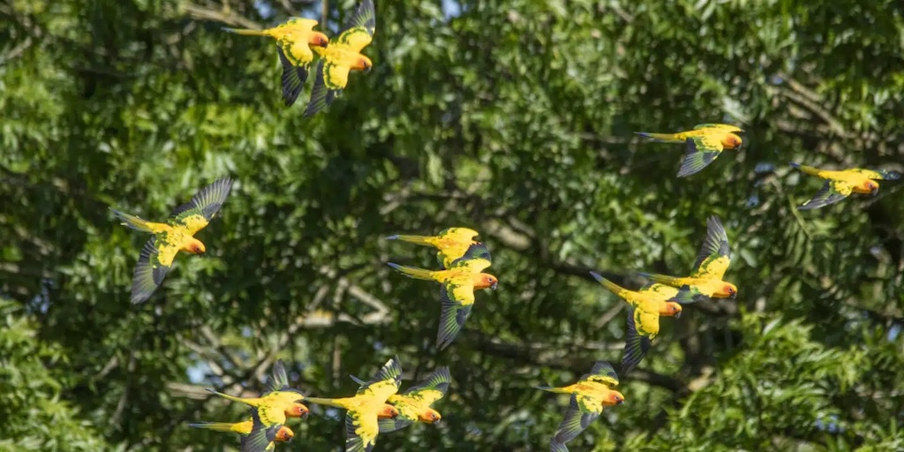
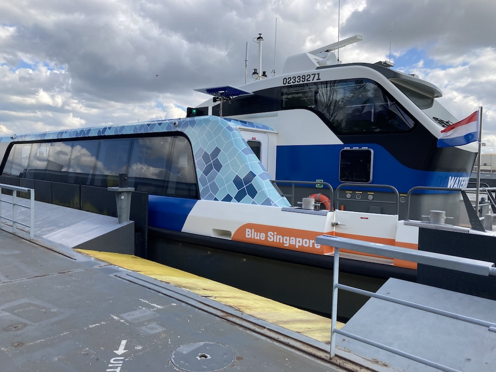
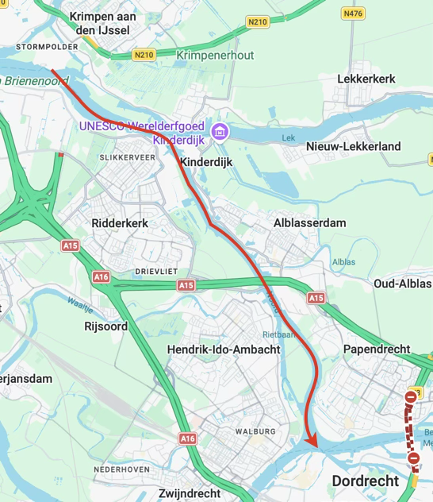
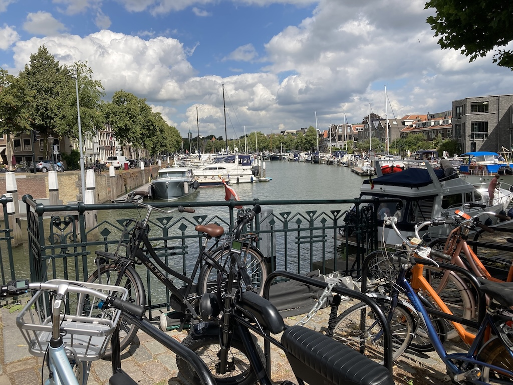
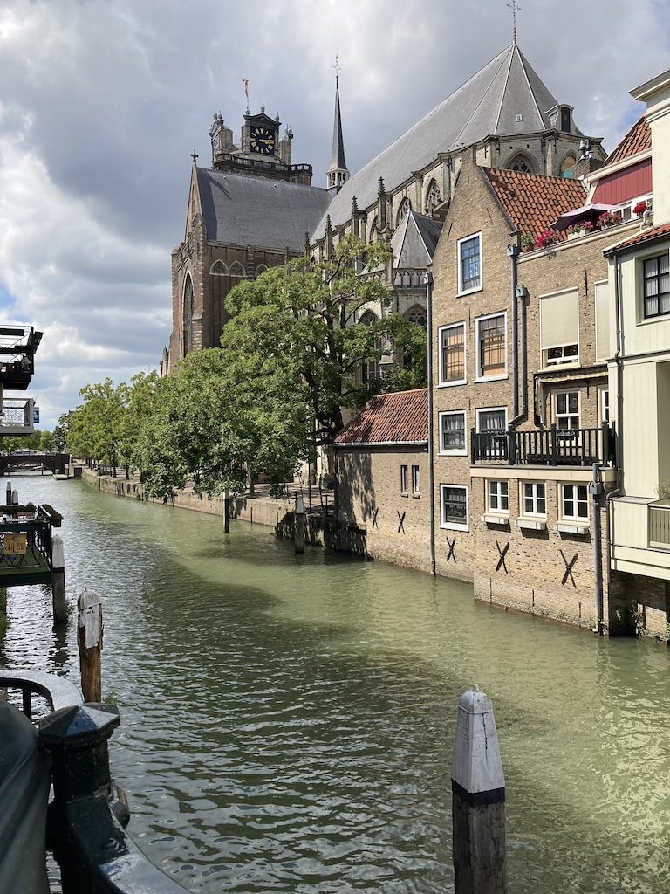
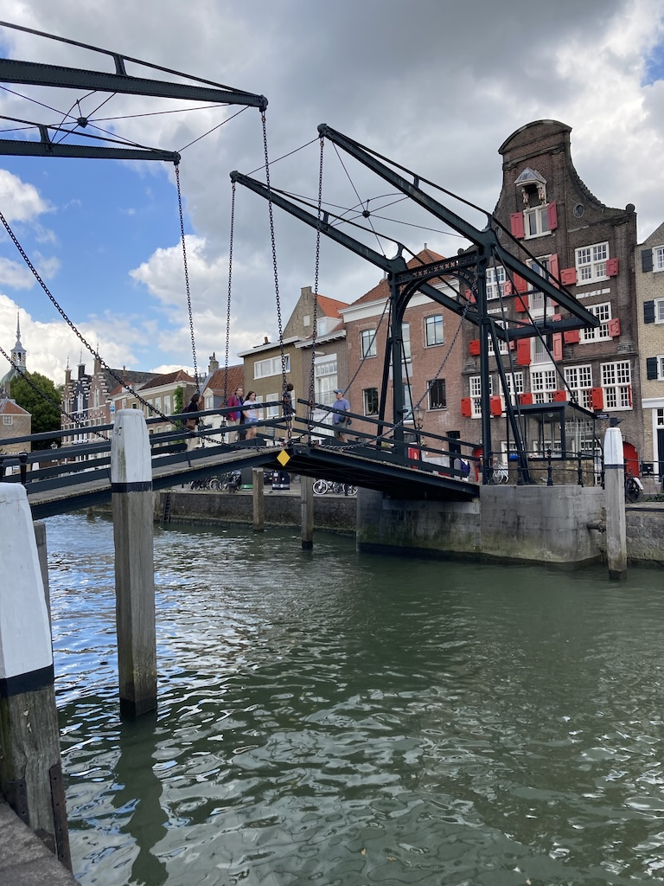

This trip was our biennial meeting of the James/Hurr family. Victoria, Brandon, Austin and Juniper were traveling to the Netherlands from Fayetteville and we were to join them. They were staying for two weeks, but we planned to only stay for one week so as not to impose too much on Krista.
 On Monday 10th July we walked down to Goring Road, pulling our cases behind us, and caught the bus to Shoreham. We were aiming for the 11:42 train, but were just in time to catch the earlier one. We changed at Burgess Hill for the ThamesLink train to St Pancras. Although we were earlier than planned, we bought a few items in Boots and had some lunch in Pret before checking in for the Eurostar. I'd printed our tickets at A5 size and the QR code was too small for the reader, so we had to go to the booth. Getting through security was fine, even though we had our photo and finger prints taken, and we then had a wait until the train was ready for boarding.
On Monday 10th July we walked down to Goring Road, pulling our cases behind us, and caught the bus to Shoreham. We were aiming for the 11:42 train, but were just in time to catch the earlier one. We changed at Burgess Hill for the ThamesLink train to St Pancras. Although we were earlier than planned, we bought a few items in Boots and had some lunch in Pret before checking in for the Eurostar. I'd printed our tickets at A5 size and the QR code was too small for the reader, so we had to go to the booth. Getting through security was fine, even though we had our photo and finger prints taken, and we then had a wait until the train was ready for boarding.
The journey was good since we were traveling Eurostar Plus. However, when we got to Rotterdam the train arrived on platform 13, with the Utrecht train on platform 14, almost ready to leave. We tapped our OV-Chip cards on the only readers we could see and took the train to Gouda. There, the card reader on the gate charged us the maximum €20. Clearly the reader at Rotterdam was only for supplements! Luckily, Krista was able to get it sorted for us.
We had phoned Paul from Rotterdam Centraal, so he met us at Gouda. Victoria et al had arrived earlier in the day (and were all quite tired) and we met Hilda, the puppy, for the first time.
Over the week that we were there a lot of game playing went on, the children (and Brandon) preferring video games, some dog walking, watching of 'Death on the Nile' and three major outings.



On Wednesday we (all except Krista) went off fairly early to the Bird Zoo (actually called Vogelpark Avifauna) at Alphen aan den Rijn, to the west of Amsterdam. It was about a 45 minutes drive and unfortunately was drizzling when we got there. It then rained more heavily for a while before drying up. However, the zoo was very good, particularly the bird shows (there were two). They let flocks of exotic birds fly freely around and had to be seen to be believed. We went to both shows, as well as viewing the other animals. They had red pandas and other mammals as well as a wide range of birds.
This image is from their web site and gives an impression of how the birds were flying around, even over the heads of the audience who were on tiered seating.
On Friday we set off fairly early (well, about ten thirty) and drove to Zeist, to the south-east of Utrecht. The journey took about an hour and a half, but then we had a five kilometer walk through the forest. This time Krista came with us, having handed Hilda over to her mother in a car park near to them. After the walk (which was quite tiring and enough for my problem leg) we drove to another forest area, but this time to go to a cafe that served pancakes. The cafe was large and very popular, but the pancakes were good. Most people wanted to sit outside (there was a queue to be seated) since it was a fine, sunny day, but we went inside. We then did a very short walk to an old fort that happened to be closed. So we drove home (another hour and a half). All in all a good day out, in spite of the journeys.

Our final outing was to Dordrecht on Monday 27th. We drove to Stormpolder, near Krimpen aan den IJssel, to catch the water bus and took the half hour 'sail' to Dordrecht, the oldest city in the province of Holland. It is also quite a large city and so is a mixture of old buildings and modern shopping areas. The following photos show the water bus, the route and hopefully give a flavour of the older parts of the city.



Tuesday was the day of our return home. Victoria et al went off to Enkhausen for the day, leaving just after breakfast. We then packed our bags before all going into Gouda for lunch. We sat outside in the main square since it was warm and we had taken Hilda with us for the experience.
We then dropped Rowan at a friend's house in Gouda (a five minute walk from their school) before Paul dropped us at the station. Krista helped us get our refund put on our OV-Chip cards and we then caught the train into Rotterdam.
Checking in at the Eurostar terminal was straight forward, and we then had to wait a while for the train to arrive. It was running 15 minutes late, but caught up before we got to London. The journey was smooth and comfortable, with a light meal (and bottle of wine) once we had left Brussels.
The ThamesLink train that we had expected to catch was delayed, so we caught one going to Horsham, but were able to get off at East Croydon, where we caught the Littlehampton train. At Shoreham we walked from the station down to the footbridge. The bus stop there was being updated, so we walked to the next stop and a bus came along within a few minutes. We were home by 9:30, where all was well.
We had an excellent, if tiring, holiday and, as usual, Krista looked after us very well.